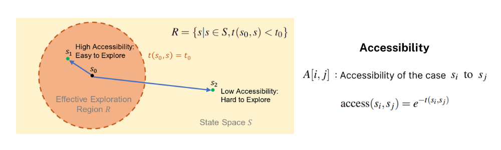
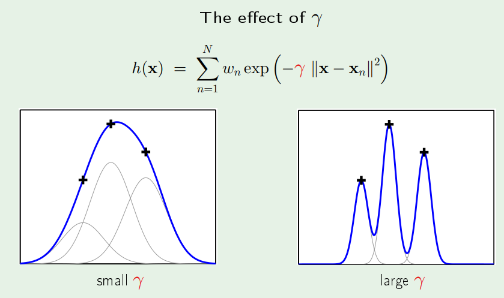
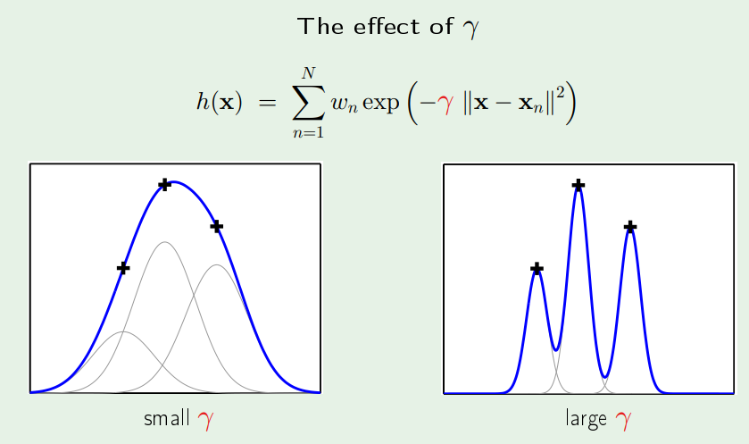

📃K-Accessibility for RL

이번 포스팅은 최근 ICRA(International Conference on Robotics and Automation) 2022에서도 발표된 Accessibility-Based Clustering for Efficient Learning of Locomotion Skills 논문을 읽고 정리한 내용입니다. 강화학습으로 로봇 제어를 학습할 때 어떻게 효율적으로 initial state distribution을 탐색하도록 만들어 줄 수 있을까?라는 질문을 K-means++ 알고리즘과 유사한 K-Access라는 알고리즘을 고안하여 해결한 논문입니다. 해당 논문에서는 quadruped robot의 Recovery와 Backflip 모션 학습을 보여주었습니다.
1 Introduction
이 세상에는 많은 로봇들이 있습니다. 그 중 족형 로봇(legged-robots), 즉 다리 매커니즘을 이용하여 지면과의 상호작용을 하여 이동하는 로봇들은 바퀴형 이동 로봇(wheeled-robots)에 비해 바퀴로 가기 힘든 울퉁불퉁한 지형, 연속적이지 않은 지형 상에서 이동할 수 있다는 장점이 있습니다. 족형 로봇과 바퀴형 로봇 모두 이동을 기본 전제로 사람에게 유용한 다양한 task를 하는 것이 목적이기 때문에 족형 로봇의 이동을 보행(locomotion) task, 바퀴형 로봇의 이동을 주행(drive) task이라고 합니다.
족형 로봇은 대표적으로 사람과 같은 보행을 하는 2족 보행 로봇과 강아지와 같은 보행을 하는 4족 보행 로봇으로 나눠볼 수 있는데 그 중 2족 보행 로봇인 Digit과 관련한 재밌는 뉴스 클립이 하나 있어서 본격적으로 논문을 살펴보기 전에 소개드립니다.
전후좌우 자유롭게 움직이고 제자리에서 돌거나 웅크릴 수 있는 유연성 … 한 마디로 고도의 기술 집합체라는 소린데, … 어째 점점 속도가 느려지는가 싶더니 다리가 풀리면서 쓰러지고 맙니다.
… 박람회 참가 전 여러 날에 거쳐 약 20시간의 라이브 테스트를 진행 … 99%의 성공률을 보였음에도 불구하고 또 사람들이 보는 앞에서 이런 사고가 …
뉴스에서 보신 것처럼 데모를 매우 오랜시간 준비하고 점검하였지만 예측하지 못한 변수로 인해 로봇이 넘어지는 모습을 볼 수 있습니다. 이미 잘 구성된 데모 환경에서도 미처 생각지 못한 일로 인해 로봇이 넘어지는데 실제 로봇이 상품이 된다면 로봇이 놓이게 되는 환경은 정말 다양해서 절대 넘어지지 않을 것이라는 보장을 하기에 어려울 것 입니다.

앞서 족형 로봇의기본 전제는 이동이라고 했듯이 Locomotion은 로봇의 Main task라고 볼 수 있으며 걷는 모션을 생각해 봤을 때 일정한 주기로 같은 모션이 반복되어 진행(cyclic)되는 것을 파악할 수 있습니다. 또한 Locomotion은 오랜시간 동안 동물들의 모션과 같은 reference motion들을 통해 연구되어 오면서 수학적인 모델링이 잘 연구되어 있습니다. 마지막으로 Locomotion의 특성을 강화학습의 policy가 학습해야 하는 로봇의 joint 제어측면에서 search space로 파악해본다면, Narrow한 search space를 가지고 있다고 표현할 수 있습니다. 반면 Recovery는 지속적인 운용을 뒷받침해주는 Support Task이자 Non-cyclic한 모션을 요구하는 task라고 할 수 있습니다. 넘어진 전복 자세에서 구체적으로 어떻게 정상 상태로 회복하라고 모션을 타임스텝 별로 정의하기가 어려우며 보다 Broad한 search space를 가지고 있는 task 입니다.
Locomotion과 Recovery에 대한 비교는 이전에 작성한 포스팅에서도 한번 다룬 적이 있으니 참고하시기 바랍니다.)
1.1 Initial state distrubutions
앞서 Locomotion과 Recovery를 비교하며 살펴보았는데 강화학습으로 하는 로봇 제어의 관점에서 매우 큰 차이점 하나가 더 있습니다. 바로 Initial State Distribution, 강화학습의 Robot Agent가 학습 Episode를 시작하는 맨 처음의 State들의 분포입니다. Locomotion에서는 command(컨트롤러로 조작하는 로봇의 desired velocity 혹은 간단하게 방향키 조작으로 생각할 수 있음)를 따라 움직이는 것이기 때문에 Initial State로 로봇의 standing 자세를 가지고 학습 Episode를 시작하게 됩니다. 반면 Recovery는 로봇이 넘어진 상황(자세)가 각 Episode의 Initial State가 됩니다. 넘어진 자세는 매우 다양하기 때문에 어떤 넘어진 자세는 정상상태로 회복하기가 상대적으로 쉬운 반면, 어떤 자세는 정상상태로 회복하기가 어렵기 때문에 Recovery task에서는 RL(Reinforcement Learning) agent가 Initial State Distribution을 잘 탐색하고 학습할 수 있도록 만들어주는 것이 매우 중요합니다.

위 사진에서 처럼 RL Agent가 탐색해야하는 전체 State Space와 어떤 한 Initial state(혹은 Initial pose, orange dot)와 유사한 state들의 집합 영역 Effective Exploration Region(EER)을 주황색 원 영역으로 표시할 수 있습니다. 여기서 주황색 원 안의 영역의 State들은 원 중심의 하나의 Initial State를 탐색하고 학습하고 나면 어렵지 않게 강화학습 Policy가 잘 학습할 수 있는 State들이라고 볼 수 있습니다. Case 1은 전체 탐색해야 하는 State Space를 빈틈의 최소화하도록 많은 Initial state를 학습하지만 각 EER들이 많이 중복되어 학습되기 때문에 학습 효율이 매우 떨어지는 것을 알 수 있습니다. Case 2에서는 적은 Initial state로 학습해서 State Space가 잘 커버되지 않았을 뿐만 아니라 목표로하는 Target State도 잘 학습되지 않아 학습 Policy의 성능이 매우 떨어지는 것을 알 수 있습니다. Case 3는 목표로하는 Target State는 EER에 들어가서 Policy가 학습한 state라고 할 수 있지만 전체 State Space에서 커버되지 못한 state들이 있기 때문에 Corner case들(Policy가 잘 작동되지 않는 경우)이 있어 Policy의 robustness가 떨어진다고 볼 수 있습니다. 따라서 가장 이상적인 상황은 Case 4에서처럼 Target State도 EER의 범주에 들어가 있고 전체 State Space도 적절한 수의 Initial State들로 탐색되어 Policy의 Robust한 상황이라고 할 수 있습니다.
1.2 Pose of Quadruped Robots
그렇다면 Initial State, 즉 4족 보행 로봇의 자세(pose)는 어떻게 표현할 수 있을까요? 전복된 상황은 넘어져 있는 로봇의 자세로 표현할 수 있을 것 입니다.

전복된 상황은 움직임이 없는 넘어진 정적(Static) 상황이라 가정하고 로봇의 상황을 다음과 같이 2가지 정보로 표현할 수 있습니다. 첫번째로는 몸체의 기울어짐을 표현하는 Projected gravity vector로 지구 중력 방향의 벡터를 (0, 0, -1)이라고 했을 때, 로봇 몸체의 프레임에 gravity vector를 projection하고 normalized한 3차원의 벡터 정보는 몸체의 기울어짐을 표현할 수 있습니다. 두번째 요소는 로봇의 각 다리에 3개씩 배치되어 관절이 되는 12개의 revolute joint(motor) angle 입니다.
1.3 Distance between poses
Pose를 정의한 다음으로 살펴볼 부분은 여러 pose들 간의 관계를 어떻게 정의할 수 있을까에 대한 부분을 고민해볼 수 있습니다. 여러 pose들 간에 가깝다(비슷하다), 멀다를 파악하기 위해서는 거리(Distance)를 정의할 수 있어야 합니다. 가장 직관적으로 pose를 이루고 있는 요소들 간의 유클리디안 거리를 생각해볼 수 있습니다. 앞서 정적인 자세를 구성하는 Projected gravity vector 와 Joint angles의 유클리디안 거리를 계산해서 나온 수치를 기반으로 pose가 서로 비슷하다, 많이 다르다를 판단할 수 있을 것 입니다.

하지만 그림에서의 예시를 통해 유클리디안 거리가 Non-sense하다는 것을 볼 수 있습니다. 3가지 자세, Backward Leaning(B), Forward Leaning(F), Lying(L)를 가지고 유클리디안 거리를 계산해보면 B-F의 거리가 F-L의 거리보다 큰 수치인 것을 확인해볼 수 있습니다. 하지만 로봇을 직접 제어해서 자세를 transition한다고 생각했을 때, F에서 B로의 transition이 F에서 L로의 transition이 훨씬 어렵기 때문에 단순하게 구성 요소들의 유클리디안 거리로 pose들 간의 거리를 정의하는 것은 제어적인 측면에서 말이 된다고 볼 수 없습니다.
2 Motivation & Contribution
도입 부분에서 파악했던 Recovery task의 특성과 pose들 간의 거리를 위한 새로운 metric의 필요성을 motivation으로 아래와 같은 contribution을 파악해볼 수 있습니다.
Euclidean distance보다 제어적인 측면에서 pose들 간의 거리 metric이 될 수 있는 Accessibility 를 제안
Accessibility를 기반으로 강화학습을 효율적으로 할 수 있도록(State Space 탐색을 잘하도록) Initial State를 정할 수 있는 K-Access 알고리즘을 제안
3 Method
Overview

전체적인 과정은 다음과 같이 크게 4단계로 진행됩니다.
- Sampling Static Poses: 전복된 정적 자세를 샘플링합니다.
- Estimating Accessibility Values: 샘플링된 전복 자세들 간의 거리 metric인 Accessibility Matrix를 계산합니다.
- Clustering: 측정한 Accessibility를 기반으로 Initial state들을 클러스터링합니다.
- Learning: Cluster의 Centroid pose를 initial state로 Recovery(혹은 Backflip)을 강화학습 알고리즘으로 학습합니다.
3.1 Sampling Static Poses
전복된 다양한 자세들을 샘플링하기 위해서 로봇의 base frame의 roll, pitch 각도를 일정 범위에서 랜덤하게 샘플링하고 12개의 joint position도 로봇의 configuration을 고려하여 upper/lower limit range에 있는 각도로 자세를 set해서 전복된 자세를 만듭니다. (이때 yaw 방향은 flat terrain에선 의미가 없기 때문에 0으로 셋팅합니다.) 샘플링된 자세로 pose를 set 했을 때 self-collision을 확인한 뒤 self-collision이 되지 않은 자세 2.4k개를 sampling 합니다.

3.2 Estimating Accessibility Values
앞 단계에서 샘플링한 2.4k개의 pose들 중 1000개만 가지고 Accessibility를 측정하게 됩니다. 우선 2.4k개 중 1000개만 가지고 진행하는 이유는 학습 이후 Policy를 테스트하기 위한 Initial state로 사용하기 위해서 1.4개의 pose는 남겨놓는 것 입니다. 앞서 유클리디안 거리가 metric으로써 좋지 않은 점을 예시를 보며 확인할 수 있었기에 논문에서는 이를 대체할 metric으로 Accessibility라는 개념을 제안합니다.

위의 예시는 어떤 pose A에서 pose B로의 Accessibility를 계산하는 과정을 보여줍니다. 특정 pose에서 다른 특정 pose로 transition하는 과정을 progress라는 작은 timestep들로 쪼개고 각 timestep에 해당하는 transition angle을 PD controller로 제어하게 됩니다. pose를 구성하는 12개의 joint position(angle)은 continuous value이기 때문에 처음과 끝 pose의 angle을 안다면 linear interpolation을 할 수 있습니다. progress를 scaled timeline(0~1로 normalized)이라고 하고 쪼갠 timestep 하나를 변수 t로 본다면 매 순간의 desired transition angle 은 t \cdot \text{[joint angle of B]} + (1-t) \cdot \text{[joint angle of A]}으로 계산될 수 있습니다. 이렇게 계산된 desired transition angle을 따라가도록 PD제어를 하면서 충분히 pose B에 가까워졌는가?를 판단하게 되는데 이때의 기준은 유클리디안 거리로 계산된 joint position distance, base의 height distance, gravity vector distance이 매우 작은 오차 범위내에 들어갔는지가 됩니다. pose A에서 pose B로 충분히 가까워진 해당 시간 t를 기록하게 되는데, 3초 내에 pose B에 가까워진 상태로 평형상태에 도달하는지 체크하게 됩니다. 저자가 공개한 코드에서 확인해봤을 때 20초를 상한선으로 설정하고 1000 pose \times 1000 pose Time 매트릭스로 평형상태에 도달한 시간을 기록합니다.
앞서 유클리디안 거리로 판단하는 것이 좋지 않다고 주장할 때는 pose들이 충분히 달랐을 때 pose들 간의 관계 정의로 사용하기에 부적절함을 들어 타당하지 않다고 주장한 것이었고, 현재 pose가 transition이 되었는가를 판단하기 위한 기준으로 유클리디안 거리가 매우 작은지로 판단하는 것은 similarness를 판단하는 것이기에 motivation을 해치지 않는다고 볼 수 있습니다.

이렇게 측정한 transition time을 가지고 State Space를 해석해본다면 pose A(s_0)에서 pose B(s_1)으로의 시간 t(s_0, s_1)이 어떤 특정 시간 t_0이하라면 두 pose 사이 관계는 High Accessibility를 가지고 있다고 볼 수 있습니다. 반면, 만약 t(s_0, s_1)이 어떤 특정 시간 t_0 초과라면 Low Accessibility 라고 할 수 있고 이때의 기준이 되는 특정 시간 t_0가 EER R의 경계를 결정합니다. 따라서 이러한 Radial Boundary를 만들기 위해 앞서 계산한 Time 매트릭스(t(s_i, s_j))를 가지고 e^{-t(s_i, s_j)}을 계산한 것을 바로 Accessibility라고 정의하게 됩니다.
3.3 Clustering
K-Access Algorithm
이제 State Space 상의 pose들간의 거리를 정의하는 Accessibility 값을 구한 다음에 어떻게 하면 클러스터링을 잘할 수 있을 것인가?에 대한 고민으로 넘어가게 됩니다. 각 cluster의 centroid가 되는 pose를 정할 수 있어야 하고 몇개의 cluster 갯수가 적절할 지 판단하는 알고리즘으로 K-Access알고리즘을 제안합니다.

우선 결론적으로 cluster의 갯수의 적절성을 Index 지수가 최대가 되는 값로 판단하게 되는데, 이 Index 지수는 Intra-cluster Accessibility와 Inter-cluster Accessibility, 마지막으로 Regularization Term까지 합산하여 결정하게 됩니다.
- Intra-cluster Accessibility: 이름에서도 볼 수 있듯이 특정 클러스터에 속해있는(=내부에 있는) sample들(각 pose를 지칭)과 centroid sample간의 Accessibility 값들 중 최소값입니다. 이 값은 Index 지수에 positive sum이 되기 때문에 의미를 해석해본다면 한 클러스터에 속해있는 sample들의 centroid로 향하는 응집력이라고 볼 수 있습니다. Intra-cluster accessibility의 차원은 1000개 샘플이 자신이 속한 클러스터 centroid와의 값을 계산하므로
1000 dimension을 가지고 있습니다. - Inter-cluster Accessibility: 클러스터들 간에 overlapping이 되지 않고 적절히 거리를 유지하며 각 EER이 전체 State Space를 커버할 수 있도록 하기 위해서 centroid sample 간의 Accessibility의 평균을 구한 값
- Regularization Term: 클러스터의 개수가 너무 커지지 않도록 하는 부분으로 Index에 negative sum이 되는 부분입니다. \alpha 값으로 Regularization의 비중을 높일 수 있는데 논문에서는 1을 사용했습니다.
K-means++ VS. K-Access
K-Access 알고리즘은 기존에 ML에서 자주 사용되는 클러스터링 알고리즘인 K-means++ 알고리즘을 기반으로 만들어진 알고리즘입니다. K-means++ 알고리즘처럼 (1) Initialize the centroids (2) Assignment step (3) Update step 단계를 거치는 것은 비슷하지만 K-means++ 알고리즘에서는 (3)단계에서 평균값을 기반으로 클러스터링이 진행되는 반면 K-Access 알고리즘에서는 robustness를 보장하기 위해 Maximal neighborhood accessibility를 사용합니다.
좀 더 자세한 알고리즘 과정을 알아보고 싶으신 분들은 아래 Pseudo Code를 확인해주세요.
Pseudo Code of K-Access

Clustering Analysis
논문에서 사용한 Bittle 로봇 플랫폼으로 clustering을 진행했을 때 43개의 cluster가 최적의 갯수로 정해집니다. 각 클러스터에 속하는 샘플 수를 히스토그램으로 확인해보면 아래 왼쪽 그래프같이 그려지며 이중 해당 클러스터에 속한 샘플 수가 많은 순서대로 top 20개의 클러스터들 간의 inter-cluster accessibility를 Chord graph를 가지고 시각화를 해보면 오른쪽 그래프와 같이 그려집니다. Chord graph에서 강조된 부분들은 0.15 이상의 Accessibility(약 1.9초 이내의 transition time)를 가진 부분들이며 옅게 표시된 부분들은 0.05 이하의 Accessibility(약 3초 이상 transition time)를 가지는 부분들입니다.

Chord graph 시각화 방법에 대해서는 해당 논문을 기반으로 실제 제가 연구하고 있는 로봇 플랫폼을 이용하여 적용한 코드 실습은 다음 포스팅 에서 확인할 수 있습니다.
3.4 Reinforcement Learning Process
마치 Machine Learning에서 Feature Engineering이 많은 주의를 요하는 작업이듯이 앞서 Initial State를 정하는 작업을 진행하고 드디어 강화학습 과정에 들어오게 되었습니다. 유명한 강화학습 알고리즘인 SAC(Soft-Actor-Critic)을 단순한 MLP 레이어로 만들어서 사용했고 Policy Network의 Input과 Ouput 설계도 관련 연구들의 convention과 크게 다르지 않기 때문에 자세한 설명은 생략하고 특징적인 부분을 살펴보겠습니다.
Reward Functions w/ RBF

해당 논문에서 다른 논문들의 강화학습 MDP 설계와 다른 특징적인 부분은 보상함수 설계 부분이었습니다. 일반적으로 Reward function은 각 Reward Term들을 Linear Weigthed Sum형식을 가집니다. 하지만 해당 논문에서는 RBF(Radial Basis Function)를 사용하여 각 Reward를 weighted sum한 값으로 최종 reward를 계산한 것을 알 수 있습니다. 사실 Reward Function을 설계하는 부분은 강화학습 연구에서 Reward Engineering 이슈가 큰 것처럼, 다분히 설계자의 의도와 설명이 필요한 부분이지만 논문에서 자세히 설명이 되어 있지 않고 Main Contribution이 아니라고 생각해서 그런지 Linear sum과 비교한 실험값도 있지 않아서 RBF를 사용한 이유를 파악하기 어려웠습니다.
 

따라서 이 부분은 RBF 커널에 대해 공부하고 나서 제가 생각한 이유를 덧붙이겠습니다. RBF 커널은 기본적으로 Gaussian Distribution 모습으로 target value와 data 간의 radial한 거리 가중치를 주게 되는데, linear sum과 비교했을 때 무한 차원 영역에서 매우 멀리 떨어져 있는 data로부터 영향을 덜 받을 수 있는 장점을 가지고 있습니다. 따라서 Reward를 계산하는 데에 RBF 커널을 통해 계산한 의도는 Maximization해야 하는 Reward term들을 단순히 Linear sum하는 것보다 여러 카테고리의 Reward target 값들에 민감하게 반응할 수 있는 정도를 \alpha값(Slide에서는 \gamma로 표현)을 이용하여 학습의 좋은 지표가 될 수 있는 Reward space를 설계한 것으로 보입니다.
Reward Term에서 사용된 Symbol의 의미가 궁금하신 분들은 아래 table을 확인해주세요.
Symbols of Reward Terms for DRL

Other Tasks - Backflip
해당 논문에서는 Recovery 뿐만 아니라 Locomotion 보다 더 다이나믹한 모션도 학습하는 것을 보여주기 위해 Backflip 학습도 K-Accessibility 알고리즘을 이용하여 학습을 진행하였습니다. (이전에 리뷰했던 WASABI 논문에서도 다이나믹한 모션 4가지 중 하나를 Backflip으로 학습 결과를 보여주었던 것과 같은 맥락으로 해당 모션 Task를 설정했다고 보시면 됩니다.)
4 Results
실험 결과는 각 다리에 2개의 joint가 있는 총 8 DoF인 Bittle 로봇 플랫폼을 가지고 총 2가지 Task, Recovery와 Backflip에 대해서 진행되었으며, 비교군으로는 아래와 같이 총 5개(proposed method 제외) 설정하여 결과를 비교했습니다.
Models
- KA
[Paper's suggestion]: K-Access 알고리즘으로 얻은 43 clusters의 centroid로 initial pose 설정 - KM: K-Means++ 알고리즘으로 얻은 33 clusters의 centroid 로 initial pose 설정
- WKM: K-Means++ 알고리즘으로 얻은 14 clusters의 centroid 로 initial pose 설정 (
gravity vector weighted by 2) - 9-Pose: 9개의 특정 pose로 initial pose 설정
- 1-Pose: lying pose 1개로 initial pose 설정
- RND: 매 Episode 마다 랜덤한 static pose로 initial pose 설정
Recovery Task

SAC 알고리즘으로 training(서로다른 seed 3가지로 실험)한 과정동안 plot한 reward graph를 보면 제안된 방법 KA의 Reward가 매우 높고 서로다른 시드에 대한 실험 결과 분산도 적은 것을 알 수 있습니다. 약 180k step에서 RND를 제외한 비교군들과 제안된 방법의 reward가 비슷하게 수렴하는 듯이 보입니다. 따라서 좀 더 확실한 제안된 방법의 장점을 살펴보기 위해 training을 마친 후에 학습 과정에서 쓰이지 않은 initial static pose 500개 test pose들에 대해서 성공률을 살펴본 결과 아래 Table2에서 볼 수 있듯이 더 적은 training episode(1200<1600)에도 불구하고 Test 에피소드 리워드의 평균값이 다른 비교군들에 비해 높고 분산도 더 낮은 것을 확인할 수 있습니다. 또한 3초 이내로 전복 회복을 성공한 성공률을 확인했을때 다른 비교군들보다 높은 99.4%를 보여 500개의 initial pose들 중 497개 케이스에 대해서 성공한 것을 알 수 있습니다.

Recovery를 성공한 케이스에 대한 timestep snapshot과 약 1.2초 동안 회복자세로 돌아가는 동안의 8개의 joint 각도 변화에 대해 plot한 그래프입니다.

Backflip에 대해서도 Recovery와 같이 실험한 결과를 확인했으며 Recovery와 크게 다른 점이 없고 제안된 방법이 Recovery에만 국한되어 있지 않고 다양한 다이나믹한 모션 학습에서도 효과가 있다는 것을 보여주기 위해 추가적으로 붙여진 부분같아 자세한 설명은 생략하겠습니다. 관련 실험 결과는 아래에서 확인해주세요.


5 Conclusion
이번에 리뷰한 논문은 강화학습의 Initial pose에 대해 심도있게 관찰해보고 어떻게 설계하고 학습해야 하는지 제안한 논문으로 매우 의미가 있는 연구였다고 생각합니다. 학습을 위해 State Space를 어떻게 분석하고 탐색할 수 있도록 유도하는 Accessibility라는 개념과 K-Access 알고리즘이 Contribution 초점으로 잘 잡혀있다고 생각하며 다만 실제 로봇을 가지고 검증해보지 못해서 조금 아쉬웠습니다. 논문에서 Future Work로 제시한 것처럼 Accessibility Estimation과 Clustering 방법에 Learning 기법을 가지고 좀 더 보완해보는 것도 좋은 연구방향이라고 생각합니다.
해당 논문에 대해서 좀 더 알아보고 싶으신 분들은 저자들이 공개한 Youtube 발표 영상도 확인해보시면 좋을 것 같습니다.
6 Reference
- Original Paper: Accessibility-Based Clustering for Efficient Learning of Locomotion Skills
- Original Paper Presentation on Youtube
- “과로 한 거니?” 박람회서 짐 나르던 2족 보행 로봇 ‘꽈당’ / JTBC 상암동 클라스
- Radial Basis Fuction (RBF) Kernel 이란?
- The Radial Basis Function Kernel
- 106 RBF Kernel
- Lecture 16 - Radial Basis Functions - Slides
- Radial Basis Function (RBF) Kernel: The Go-To Kernel
- k-means++ Wiki
- Chord diagram